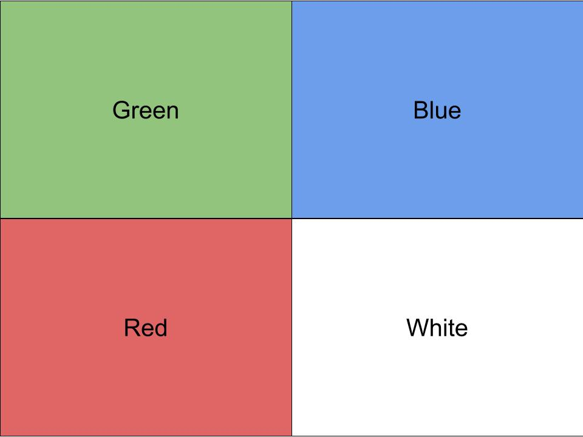

IIIF Image API
Overview
The Image API provides for a standardized way to request and deliver images. Having this standardization allows both browser and server applications to reuse software and provide a consistent experience for requesting images.
I will be presenting this Google slide deck but will include all links here so you can follow along.
Presenter
Glen Robson, IIIF Technical Coordinator
National Library of Wales links:
Pre-IIIF Viewers
Example from Ben Albritton's blog Fellow Travelers: The Canterbury Tales and IIIF
Image API
Latest version of the Image API is available at http://iiif.io/api/image/2.1/.
Image API demonstration
Many of these examples are from Tom Crane's excellent blog series.
Image API Exercises
Look at the following and play around with the parameters:
Questions
In pairs answer the following questions:
- Given the following image URL: https://iiif.lib.ncsu.edu/iiif/mc00198-008-ff0051-000-001_0001/full/512,/0/default.jpg what would be the URL for the
info.json? - What is the width and height of the biggest size image?
- Construct a URL that:
- Shows the full image
- is 512px wide
- is upside down
- gray scale
- has a format of
png
- What formats can you request for this image?
Looking at the IIIF API Specification https://iiif.io/api/image/2.1/
- What status code should be returned if you ask for a format the image server doesn't support?
- What does
maximage size mean? How does it differ tofull? When might you use this?
Given the following info.json:
{
"@context": "http://iiif.io/api/image/2/context.json",
"@id": "http://example.com/iiif/image/2",
"@type": "iiif:Image",
"protocol": "http://iiif.io/api/image",
"width": 400,
"height": 400,
}
and image:

HINT: remember 0,0 is the top left of the image.
- What would the URL be to cut out the green quarter?
- What would the URL be to cut out the white quarter?
Bonus points:
Given the following info.json: https://iiif.lib.ncsu.edu/iiif/mc00198-008-ff0051-000-001_0001/info.json
- How many tiles would you need to show the full image?
If you finish have a look at http://puzzle.mikeapps.me/